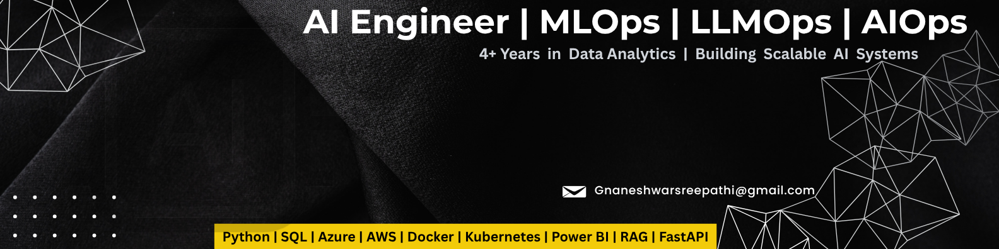

4+ years of experience in AI/MLOps, Data Analytics, and Cloud technologies. Skilled in building scalable pipelines using AWS, Azure, and modern DevOps tools. Currently focused on Generative AI and LLMOps.
Software Quality Engineer – Infosys (Westpac Client)
✔ Built Power BI dashboards for KPI tracking
✔ Automated ETL workflows using ADF & Informatica
✔ Reduced defects by 30% through RCA
✔ Worked on CI/CD pipelines using Docker & Kubernetes
📧 Gnaneshwarsreepathi@gmail.com
💻 GitHub